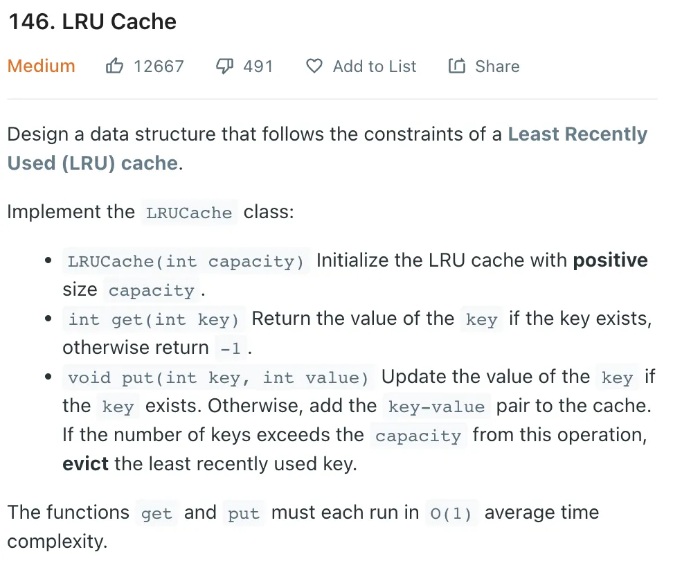
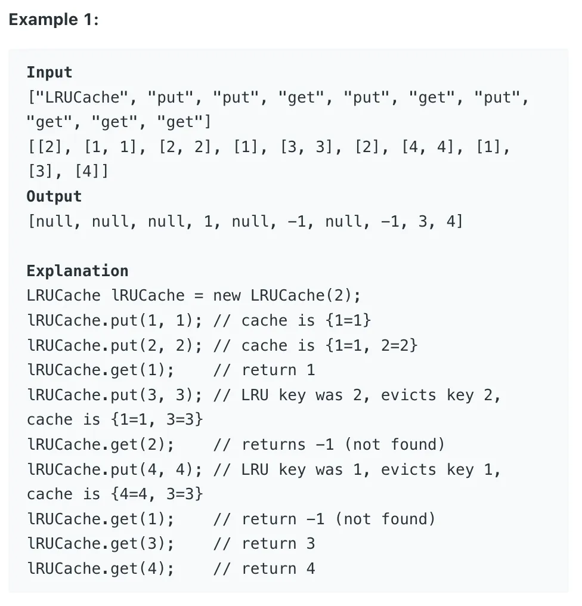
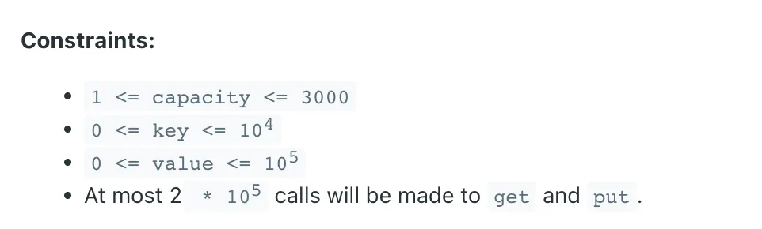

146. LRU Cache
考過的公司：Amazon、Bytedance、Grab、Shopee、tiktok
Question



✍🏽 My Solution
Runtime: 60 ms, faster than 94.01% of Java online submissions for LRU Cache. Memory Usage: 111.3 MB, less than 92.81% of Java online submissions for LRU Cache.
class LRUCache {
private class DLinkedNode {
public int key;
public int value;
public DLinkedNode prev;
public DLinkedNode next;
public DLinkedNode(int key, int value) {
this.key = key;
this.value = value;
}
}
private HashMap<Integer, DLinkedNode> map = new HashMap<>();
private int size;
private int capacity;
private DLinkedNode head;
private DLinkedNode tail;
private void removeNode(DLinkedNode node) {
node.next.prev = node.prev;
node.prev.next = node.next;
}
private void addNodeAtHead(DLinkedNode node) {
node.next = head.next;
head.next.prev = node;
head.next = node;
node.prev = head;
}
public LRUCache(int capacity) {
this.size = 0;
this.capacity = capacity;
this.head = new DLinkedNode(-1, -1);
this.tail = new DLinkedNode(-1, -1);
this.head.prev = null;
this.head.next = tail;
this.tail.prev = head;
this.tail.next = null;
}
public int get(int key) {
if (size == 0) return -1;
if (!map.containsKey(key)) {
return -1;
}
DLinkedNode node = map.get(key);
removeNode(node);
addNodeAtHead(node);
return node.value;
}
public void put(int key, int value) {
// 判斷有值，移除節點，插入頭部
if (map.containsKey(key)) {
DLinkedNode node = map.get(key);
node.value = value;
removeNode(node);
addNodeAtHead(node);
return;
}
// 滿了先移除tail
if (size == capacity) {
map.remove(tail.prev.key);
removeNode(tail.prev);
size--;
}
// 沒滿直接插入
DLinkedNode newNode = new DLinkedNode(key, value);
map.put(key, newNode);
addNodeAtHead(newNode);
size++;
}
}
/**
* Your LRUCache object will be instantiated and called as such:
* LRUCache obj = new LRUCache(capacity);
* int param_1 = obj.get(key);
* obj.put(key,value);
*/
🧠 Thought Process
- Why did I choose this particular implementation?
- 參考王爭
- 这个问题可以通过一个哈希表来解决，这个哈希表可以跟踪双链表中的键及其值。关于双链表，一个有趣的特性是节点可以在没有其他引用的情况下删除自己。此外，从头部或尾部添加和删除节点需要恒定的时间。 我实现的双链表的一个特殊之处在于，我创建了一个伪头和尾来标记边界，这样我们就不需要在更新期间检查NULL节点。这使得代码更加简洁和干净，而且对性能也有好处
- 「為什麼要用雙向鍊錶」：因为我们需要删除操作。删除一个节点不光要得到该节点本身的指针，也需要操作其前驱节点的指针，而双向链表才能支持直接查找前驱，保证操作的时间复杂度 O(1)。
- 「为什么要在链表中同时存储 key 和 val，而不是只存储 val」：因為我們要刪除哈希表跟鏈表，當緩存容量滿的時候，要把map映射到該節點的key刪除
- What is the time/space complexity of my solution? How do I know?
- get
- time: O(1)
- space: O(n)
- put
- time: O(1)
- space: O(n)
- get
- How do better solutions differ from my own?
- 直接用Java的LinkedHashMap()：
-
What mistakes did I make?
- LRUCache()會忘記將頭節點設定成空 this.head.prev = null; this.tail.next = null;
- 移除節點的時候，每次都忘記是移除tail的prev
- removeNode 裡面的 node.next 會寫成 tail
- 要注意插入頭部節點的順序 insertAtHead
- 初始化都會忘了要頭結點連上tail指針
-
這段要map先移除 才能移除node，不然tail.prev會是錯的
if (size == capacity) { map.remove(tail.prev.key); removeNode(tail.prev); size--; }
-
刪除尾節點記得是tail.prev!!!!!!!!!